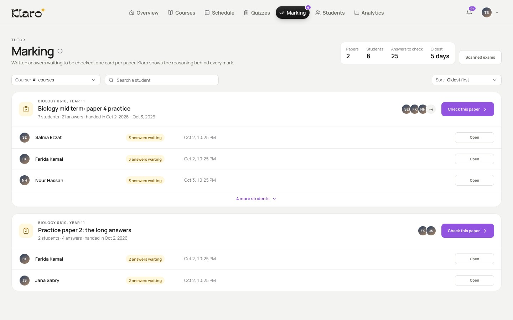
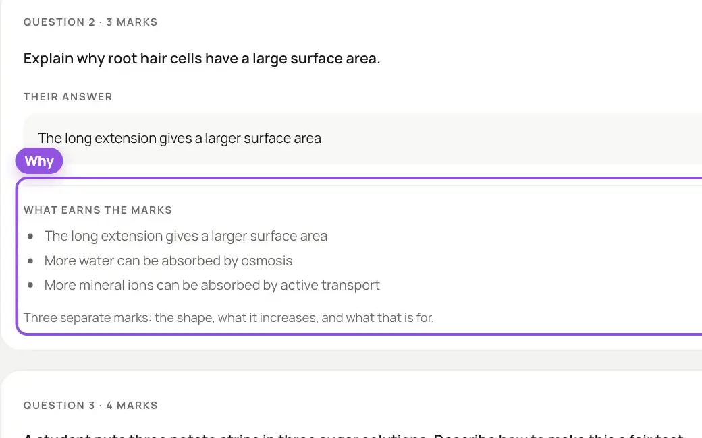

Upload the papers. Get them back marked.
Scan your students' written papers and upload them with your mark scheme. Answers come back marked, with feedback for each student, and nothing goes out until you send it.
Marking in Klaro: the queue, then one paper, marked

- Every paper handed in waits here, one card per paper.
- Each answer comes back marked…
- …with what earns the marks beside it.
- Each student's mark adds up as you go.
How marking works
Marked against your scheme
Question part by question part, with what earns the marks beside each answer.

You have the last word
Change any mark, with a reason. Nothing reaches a student until you send it: one result at a time, or every result that's ready at once.
What your students see
A notification, then their marks for every question part under Exam results. They can download their marked paper.
Klaro for students
Powered by research. Feedback is one of the strongest influences on learning, and it works best when learners can see how they did against a clear goal.
Hattie, J., & Timperley, H. (2007). The power of feedback. Review of Educational Research, 77(1), 81–112. https://doi.org/10.3102/003465430298487
Upload
One upload for the whole class
The paper, its mark scheme and every student's answers, on one screen.
- The question paper
- As a PDF. Or pick past-paper questions from Klaro's library, and Klaro puts the paper and its mark scheme together.
- Your mark scheme
- As a PDF, with the total marks. Every answer is marked against it.
- Your students' papers
- One PDF per student, scanned from their written paper. Klaro matches each file to the student it's named after.
FAQ
Questions about marking
Klaro marks every answer against the mark scheme you upload, question part by question part. You check the marks, change any of them, and send the results.
Put each student's pages into one PDF first. Klaro takes one PDF per student, up to 24 MB and 200 pages.
It matches each file to the student it's named after. If a name doesn't match, pick the student yourself: a result can only be sent to a student it's linked to.
No. Once the uploads finish you can leave the page. The exam shows how many answers are done, and how many results are ready to send.
Yes. Change any mark and note the reason. Nothing reaches a student until you send it: one result at a time, or every result that's ready at once.
A notification in Klaro, then their marks for every question part under Exam results, with feedback. They can download their marked paper.
Free while in beta
The last word on every mark is yours.
We don't make content. We connect yours.
Every tutor account is reviewed before it opens.